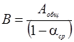
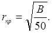
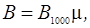
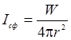
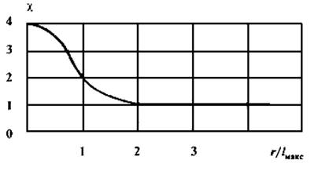
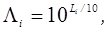

6.3 Расчет уровня звука в помещении
Учет прямого и отраженного звука
Выше было показано, что в диффузном поле в стационарном режиме плотность
звуковой энергии равна:
Интенсивность звука равна соответственно:
а
уровень звука:
Однако в общем случае в звуковом поле можно выделить две составляющие – прямой и отраженный звук:
Если источник звука находится в объеме помещения и излучает сферическую звуковую волну, то
где
W
– мощность источника, а r
– расстояние от источника звука до расчетной точки.
После отражения часть звуковой энергии поглощается:
Величина  называется постоянной
помещения.
С учетом введенных обозначений получаем для общей плотности звуковой энергии в произвольно выбранной расчетной точке:
Степень диффузности поля в конкретной выбранной точке характеризуют акустическим отношением:
Область звукового поля, в которой M < 1, называется зоной прямого звука, область с M > 1 – зона отраженного звука. Граница между ними определяется предельным радиусом:

Если расстояние от источника звука до приемника меньше rпр (зона прямого звука), то воспринимаемый звуковой сигнал определяется в основном свойствами источника звука, а не свойствами помещения. Если же r >> rпр, то воспринимаемый звук в большой степени зависит от акустических характеристик помещения, в частности, от постоянной В.
Приближенная оценка постоянной помещения
Для расчета постоянной помещения нужно определить эквивалентную площадь звукопоглощения для данного помещения Aобщ и средний коэффициент звукопоглощения поверхностей помещения αср = Aобщ/ Sобщ. При этом требуется знать площадь каждого однородного участка поверхности, ограничивающей помещение, коэффициенты звукопоглощения этих участков на различных частотах, учесть наличие различных объектов, поглощающих и рассеивающих звук (колонн, экранов, мебели, людей и так далее). На этапе проектирования или предварительной оценки это не всегда представляется возможным. В этом случае для оценки B используют приближенную формулу:

где B1000 – постоянная помещения (в м2) на частоте 1000 Гц, μ – частотный множитель. Величина B1000 определяется в зависимости от типа помещения и его объема V по таблице:
Тип помещения Описание
помещения B1000,
м2 1 С
небольшим количеством людей V/20 2 С
жесткой мебелью и большим количеством людей или мягкой мебелью и небольшим
количеством людей V/10 3 С
большим количеством людей и мягкой мебелью V/6 4 Помещения
со звукопоглощающей облицовкой потолка и части
стен V/1,5
Значения частотного множителя μ для среднегеометрических частот октавных полос:
|
V,
м3 |
μ | |||||||
|
63 |
125 |
250 |
500 |
1000 |
2000 |
4000 |
8000 | |
|
V<200 |
0,8 |
0,75 |
0,7 |
0,8 |
1 |
1,4 |
1,8 |
2,5 |
|
V=200÷1000 |
0,65 |
0,62 |
0,64 |
0,75 |
1 |
1,5 |
2,4 |
4,2 |
|
V>1000 |
0,5 |
0,5 |
0,55 |
0,7 |
1 |
1,6 |
3 |
6 |
Учет расположения и характеристики направленности источника звука
Полученное
ранее выражение для расчета плотности звуковой энергии прямого звука справедливо
только для точечного источника звука, расположенного в объеме помещения. В общем
случае:
Здесь Φ – характеристика направленности излучения источника:
где I – интенсивность излучения источника в данном направлении,  - интенсивность сферической звуковой волны. Если
источник
одинаково излучает по всем направлениям, Φ = 1.
Коэффициент
χ учитывает влияние формы и размеров источника звука на звуковое поле в
непосредственной близости от него (в ближнем звуковом поле). На рисунке приведен
график зависимости коэффициента χ от r/lмакс
(r
– расстояние до акустического или геометрического центра тела, излучающего звук,
lмакс
– максимальные габаритные размеры источника звука). Из графика видно, что при
r/lмакс >
2 χ = 1.

График
для определения коэффициента χ в зависимости от r/lмакс
Величина
Ω равна телесному (пространственному) углу, в который излучается звуковая
энергия. Для источника, расположенного в объеме помещения, Ω = 4π. Если источник
звука находится на поверхности пола, стены или потолка, Ω = 2π. При расположении
источника в двугранном углу Ω = π, в трехгранном углу - Ω =
π/2.
Уточненная
формула для расчета плотности звуковой энергии с учетом прямого и отраженного
звука принимает вид:
Соответствующий
уровень звука равен:
Если в помещении несколько источников звука, то уровень звука можно рассчитать по формуле:
где  Li - уровень мощности каждого источника, т – количество источников звука, ближайших к расчетной точке (для которых ri ≤ 5rmin), n – общее количество источников звука в помещении.